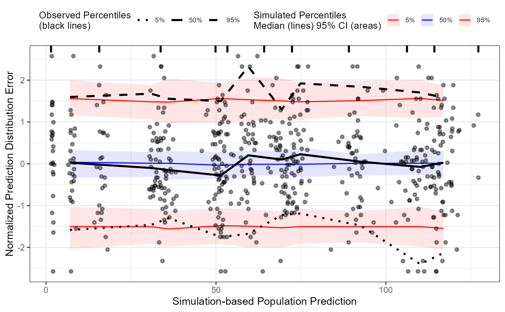

Normalized Prediction Distribution Errors
Usage
npde(o, ...)
# S3 method for class 'tidyvpcobj'
npde(o, id, data = o$data, smooth = FALSE, ...)References
Brendel, K., Comets, E., Laffont, C., Laveille, C. & Mentrée, F. Metrics for external model evaluation with an application to the population pharmacokinetics of gliclazide. Pharm. Res. (2006) 23(9), 2036–2049.
Nguyen, T.H.T., et al. Model evaluation of continuous data pharmacometric models: metrics and graphics. CPT Pharmacometrics Syst. Pharmacol. (2017) 6(2), 87–109; doi:10.1002/psp4.12161.
Examples
# \donttest{
require(magrittr)
require(ggplot2)
#> Loading required package: ggplot2
obs <- obs_data[MDV==0]
sim <- sim_data[MDV==0]
npde <- observed(obs, x=NULL, y=DV) %>%
simulated(sim, y=DV) %>%
npde(id=ID)
vpc <- observed(npde$npdeobs, x=epred, y=npde) %>%
simulated(npde$npdesim, y=npde) %>%
binning("eqcut", nbins=10) %>%
vpcstats()
plot(vpc) +
labs(x="Simulation-based Population Prediction", y="Normalized Prediction Distribution Error")

# }